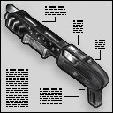

This Franchi-Spas 12 semi-automatic assault shotgun holds eight shells and loads from the bottom. It can either fire one shell at a time, or with a much slower rate, fire a double barrel load. Each is very powerful, but only someone heavily armored can withstand a clean double barrel shot. |